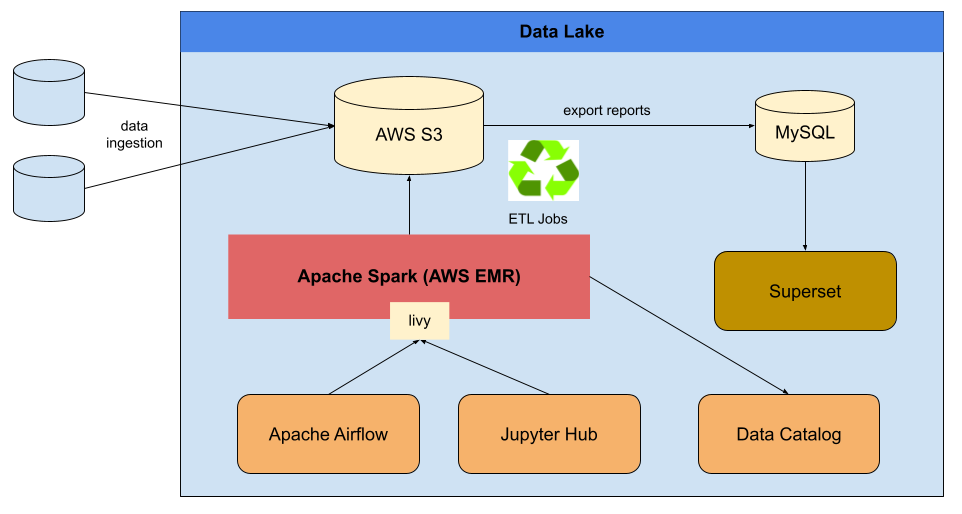

Hightlights:
Access to data should only be granted to authorized identity. Access to data should be audited. All data access operation (or attempt) should be tracked.
As business grows, your data may grow as well. In many scenarios, your data lake need to be able to process data at scale. For example, scanning a table of 1 billion rows of transaction data and calculate the revenue group by merchant id. The industry is shifted to big data realted technologies such as Apache Spark from traditional analytical database as compute engine for processing data at scale.
In additional to processing data in batches with ETL pipelines, you need to decide if your business requires processing streaming data. For example, a stock broker sends trading summary to everyone at the end of day, it is a typical batching process. However, bank's ATM system might monitor all the ATM transactions and may suspend potential fraudulent transaction ASAP, the sooner you can process the data and discover fraudulent transactions, the more loss you can prevent.
Visualized data is easier to understand, and get vision from it. For example, looking at stock chart is better
than looking at 5-minute trading record of a stock, with chart, you can see the trend better than looking at trading transactions table.
People sometimes also call it BI, or Business Intelligence. Here is an incomplete list of data visualization platforms:
Apache Airflow is a commonly used to orchestrate your ETL pipelines, main features includes:
Your data lake need to integrate with your company's devop system. For example, operational failure can be surfaced to devop people.
For example, you do not want a ETL pieline failure slip silently.